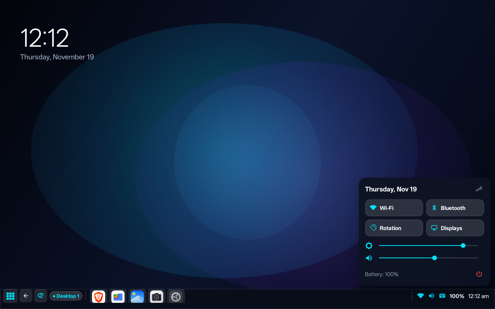
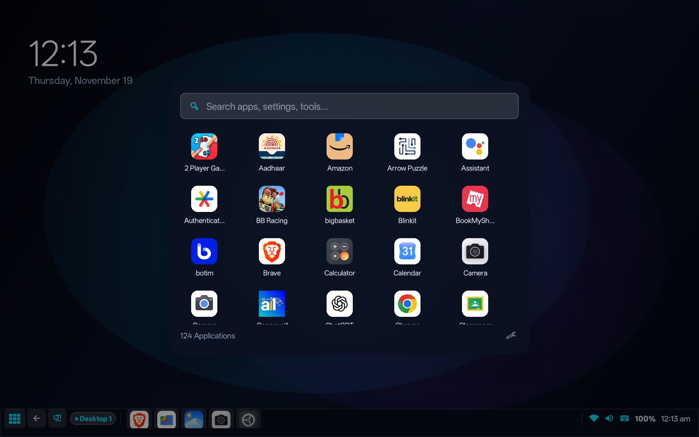

Turn Any Android Phone Into a Real Desktop Workstation.
Multi-window floating apps, virtual desktop spaces, persistent overlay taskbar, and zero vendor lock-in. Powered natively by AOSP Windowing Mode 5 without Knox or root.
Built for Real Multitasking
AOSP Freeform Multi-Window
Launch applications into true floating, resizable windows. Run multiple desktop apps side-by-side with 50/50 split snapping, 4-corner tiling, and smooth window controls.
Virtual Desktops (Spaces)
Organize workflows across dedicated workspaces (Desktop 1, 2, 3...). Switch smoothly with 1-finger horizontal wallpaper swipes or 3-finger trackpad gestures.
Persistent Overlay Taskbar
Never get locked out by full-screen apps. The floating taskbar binds to external monitors via isolated display contexts, keeping Back navigation and Start Menu accessible.
Squircle Icon Normalization
Third-party Android apps with opaque white squares are normalized inside standardized frosted-glass squircle frames (38dp, 11dp curvature) for a unified aesthetic.
Notifications & Phone Calls
Integrated 1-tap Notification Center button pulls down the native notification shade. Incoming calls trigger high-priority desktop heads-up alerts to answer directly from your monitor.
Deep Space Wallpapers
Ships with procedural presets including Celestial Hyper Space, Cosmic Sequoia, Azure Bloom, and Aurora Borealis, plus instant custom wallpaper imports from your photo gallery.
Designed for Large Displays



